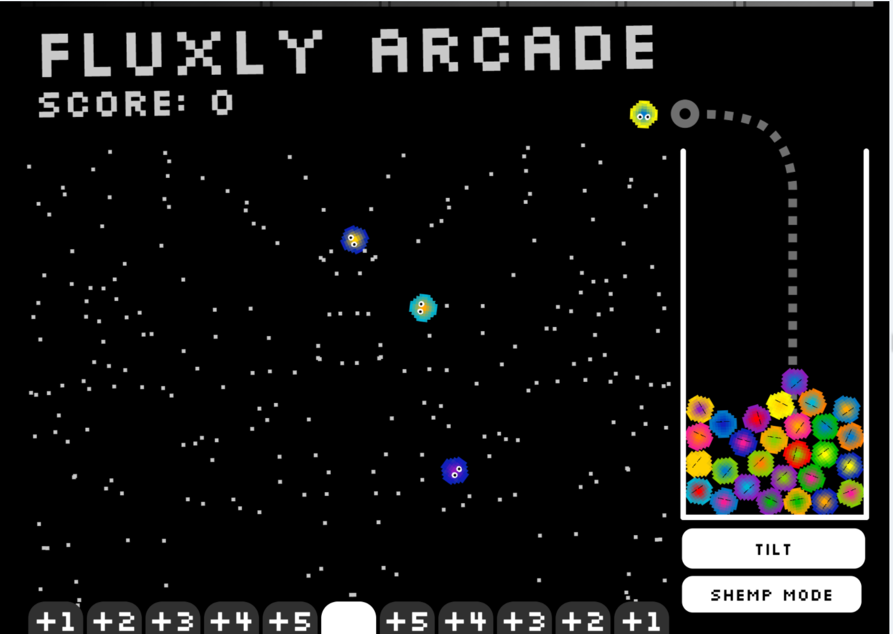

This is a port of Fluxly Arcade, the default game for the Snoofy System 7 fantasy console. Fluxly arcade is based on Fluxly technology; fling your fluxum into the pachinko machine and score points. Liberal use of the Tilt button is encouraged to free your fluxum.
This game is an entry in the October 2021 Ludum Dare. The Ludum Dare theme was "Unstable" so the physics model for the pachinko pin board is the size of a building balanced on a fulcrum at the center of the screen.